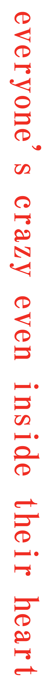
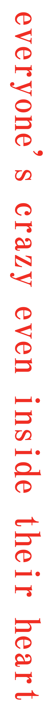

welcome to dirty night

welcome to dirty night
作詞・作曲・編曲のみならず、クリエイターと協働してアートワーク制作、映像プロデュースも手掛ける。現役で美術系大学に通いながら活動中。
2019年春頃からYouTubeに楽曲を投稿し始め活動を開始。「東京フラッシュ」「不可幸力」など、耳に残るメロディーに幅広いジャンルの楽曲を発表すると瞬く間にSNSで話題に。
日本テレビ「バズリズム 0 2」“今年コレがバズるぞ！BEST10 ” 1 位を取得、現在YouTube、サブスクリプション トータル再生数が20億回を突破するなど、サブスク令和時代の象徴的な存在として注目を集める。これまでに開催したライブは全て即完。アーティストからの注目度も高く、コラボレーションにも積極的に取り組む。
その波は海を越え、LAUVからオファーを受けグローバルリミックスアルバムへ参加、グローバルチームにて制作された「不可幸力 (Global Dance Video)」が世界的なカルチャーサイトNownessピックアップされるなど、国内外での活動も積極的に行う。
耳を捕らえ一聴で癖になる天性の声と、破格の才能を感じさせるジャンルに囚われない幅広い楽曲センスで、ファンダムを急速に拡大中。